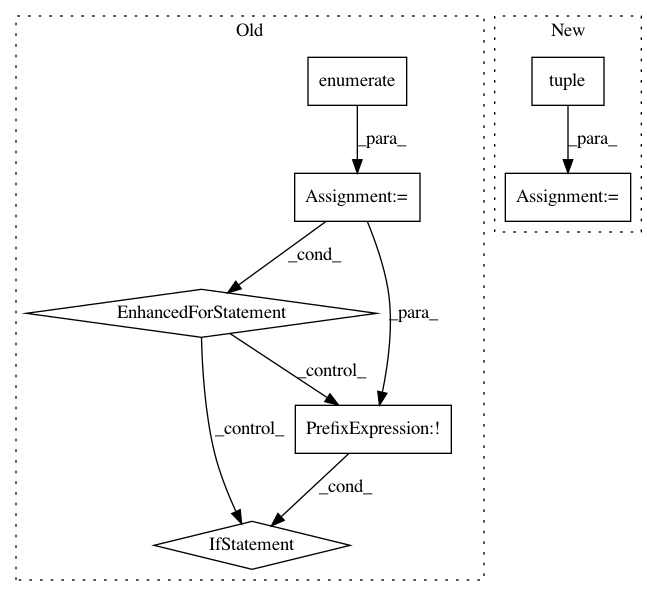

b7efa1f037f8adc94a28fc421dd7934b63b3043e,geomstats/_backend/numpy/__init__.py,,assignment,#Any#Any#Any#Any#,121
Before Change
indices = [indices]
if not isinstance(values, list):
values = [values] * len(indices)
for nb_index, index in enumerate(indices):
if not isinstance(index, tuple):
index = (index,)
if len(index) < len(shape(x)):
for n_axis in range(shape(x)[axis]):
extended_index = index[:axis] + (n_axis,) + index[axis:]
x_new[extended_index] = values[nb_index]
else:
x_new[index] = values[nb_index]
return x_new
def assignment_by_sum(x, values, indices, axis=0):
After Change
return x_new
zip_indices = _is_iterable(indices) and _is_iterable(indices[0])
if zip_indices:
indices = tuple(zip(*indices))
if not use_vectorization:
x_new[indices] = values
else:
indices = tuple(
list(indices[:axis]) + [slice(None)] + list(indices[axis:]))
x_new[indices] = values
return x_new
In pattern: SUPERPATTERN
Frequency: 3
Non-data size: 7
Instances
Project Name: geomstats/geomstats
Commit Name: b7efa1f037f8adc94a28fc421dd7934b63b3043e
Time: 2020-04-22
Author: 62605255+pchauchat@users.noreply.github.com
File Name: geomstats/_backend/numpy/__init__.py
Class Name:
Method Name: assignment
Project Name: Theano/Theano
Commit Name: c571066f4b0cb46f5aef7f4fa280e1ffabb24172
Time: 2016-09-30
Author: oli.mastro@gmail.com
File Name: theano/tensor/opt_uncanonicalize.py
Class Name:
Method Name: local_alloc_dimshuffle
Project Name: cornellius-gp/gpytorch
Commit Name: 303217b34070dc47a86622b62764098999b0d7f5
Time: 2018-12-12
Author: gpleiss@gmail.com
File Name: gpytorch/lazy/lazy_tensor.py
Class Name: LazyTensor
Method Name: _quad_form_derivative